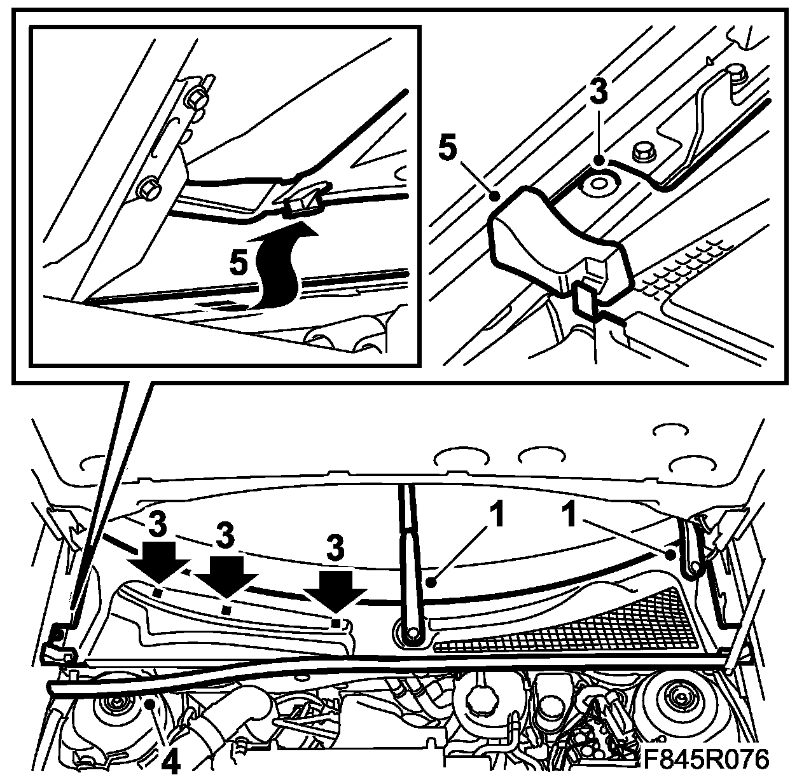
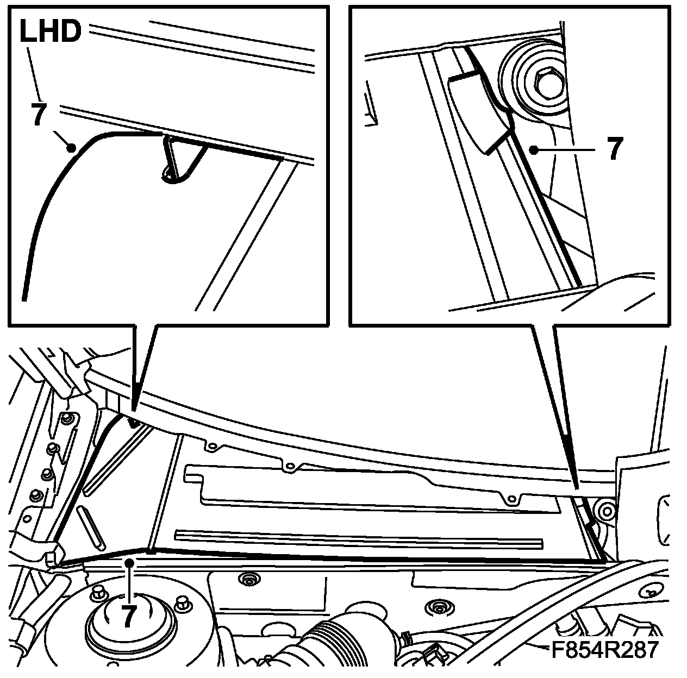
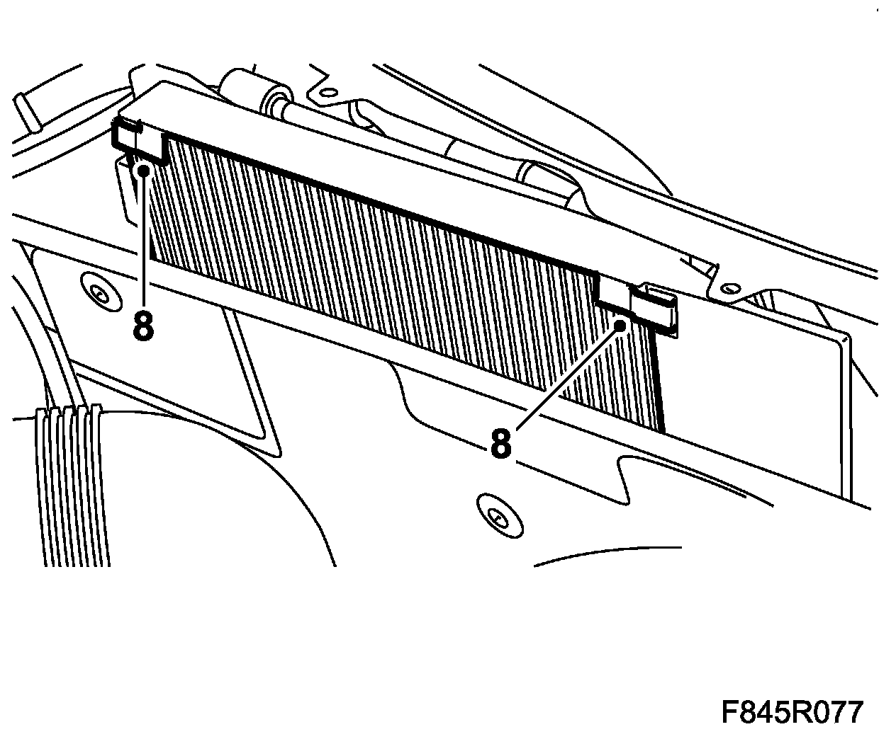
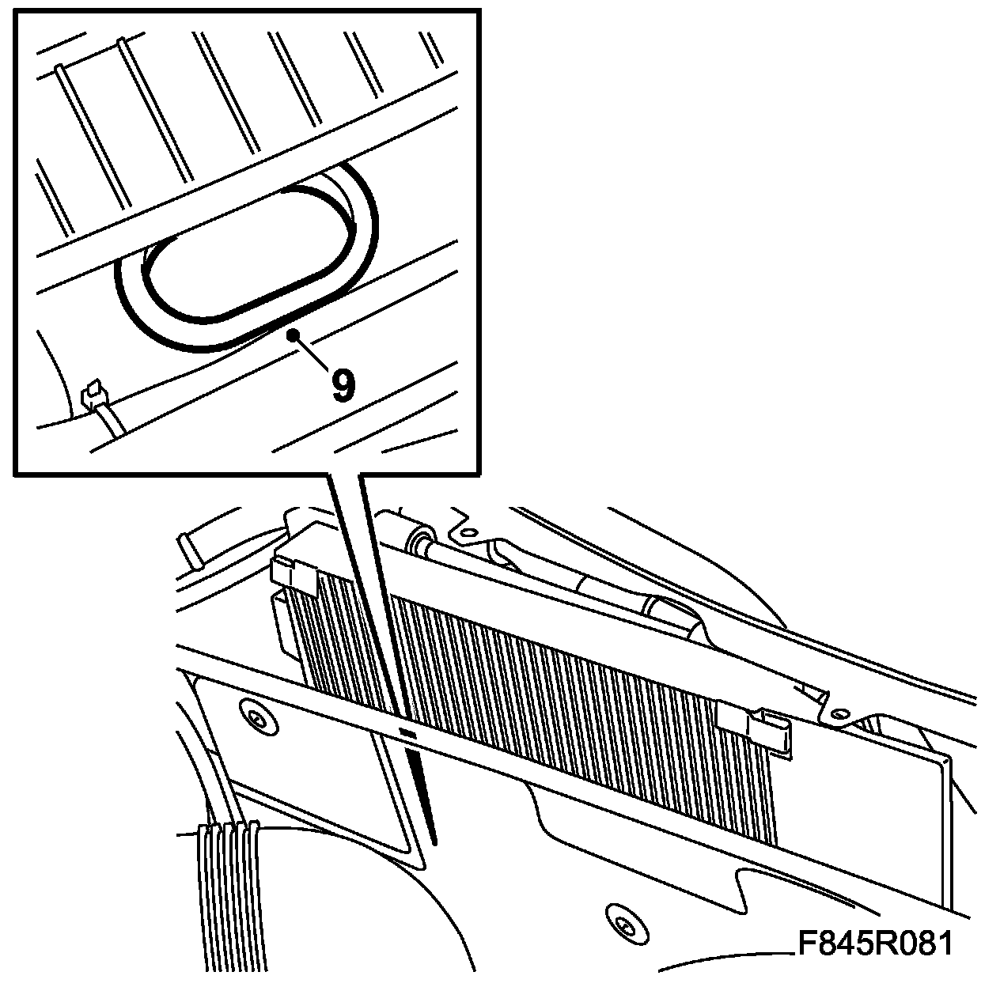
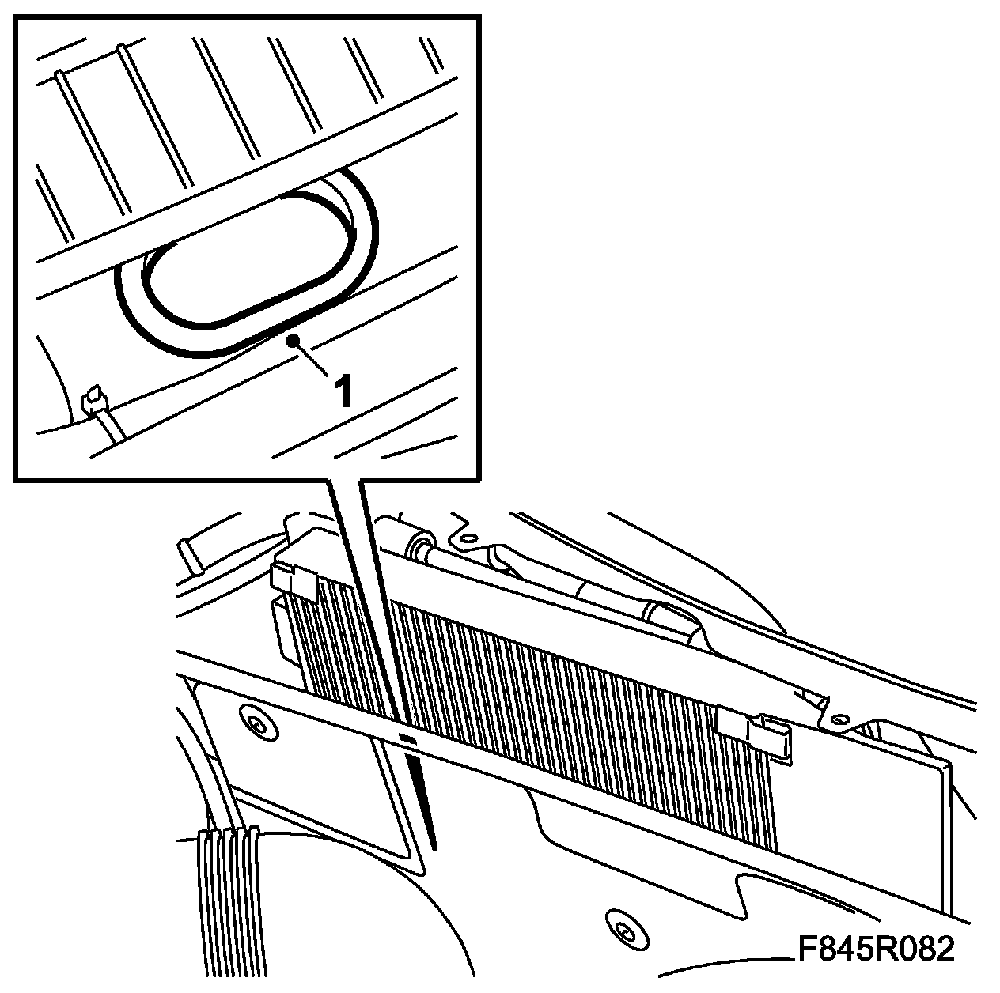
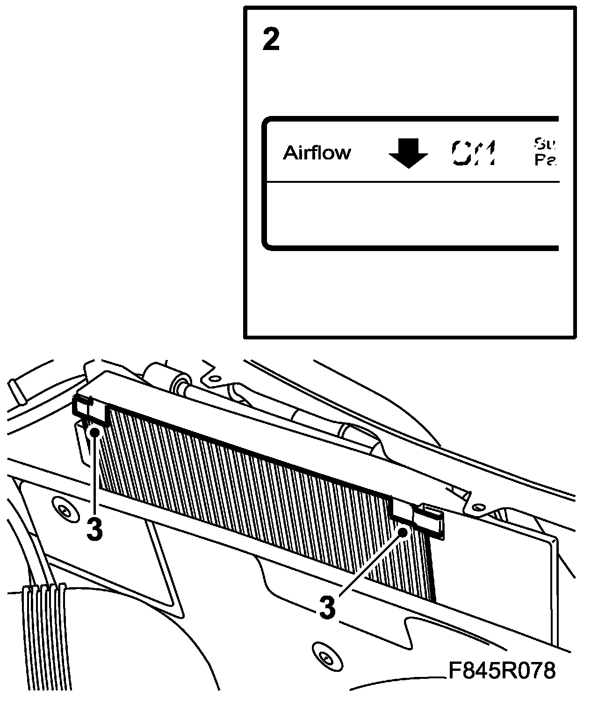
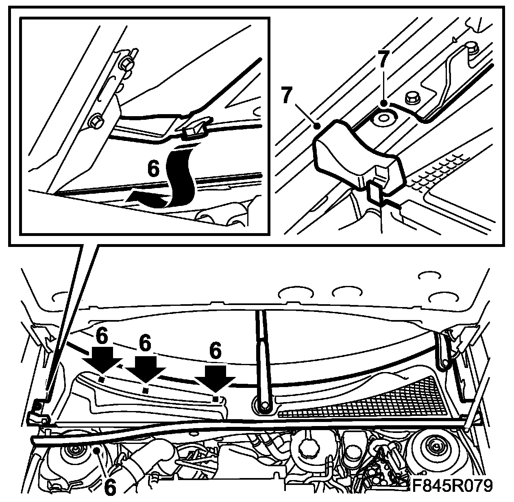

Cabin Air Filter / Purifier: Service and Repair
Replacement Of The Fresh-air Filter And Cleaning Of The Drainage Hose
To remove
1. Set the wipers in the service position.
2. Open the bonnet.
3. Dismantle the cover's right hand clips.
CV: Remove the clip on the corner tab to the windscreen corner.

4. Loosen the rear main seal halfway.
5. Lift off the foam block and lift up the front edge of the cover so that the hook and clip release on the rear edge. Fold back the corner tab.
6. Fold up the cover halfway.
7. Cars with water barrier: Remove the water barrier.

8. Fold up the clips from the filter holder. Lift off the fresh-air filter.

9. Lift up the drainage hose and clean it.

To fit
1. Fit the drainage hose.

2. Fit the fresh-air filter. The fresh-air filter should be fitted with the arrows directed in towards the car.

3. Fold back the holder's clips.
4. Cars with water barrier: Fit the water barrier.
5. Fold down the cover.
6. Fold down the corner so that it passes the hinge and bonnet. Fit the corner tab under the windscreen moulding. Insert the hook under the windscreen and press down the cover so that the clips lock.
CV: Fit the clip to the corner tab against the corner of the windscreen.

7. Lift up the foam block and fit the clip. Fit the rear main seal.
8. Check the function of the wipers.